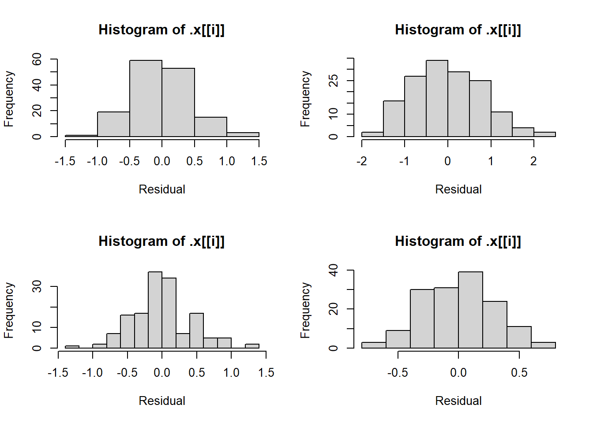
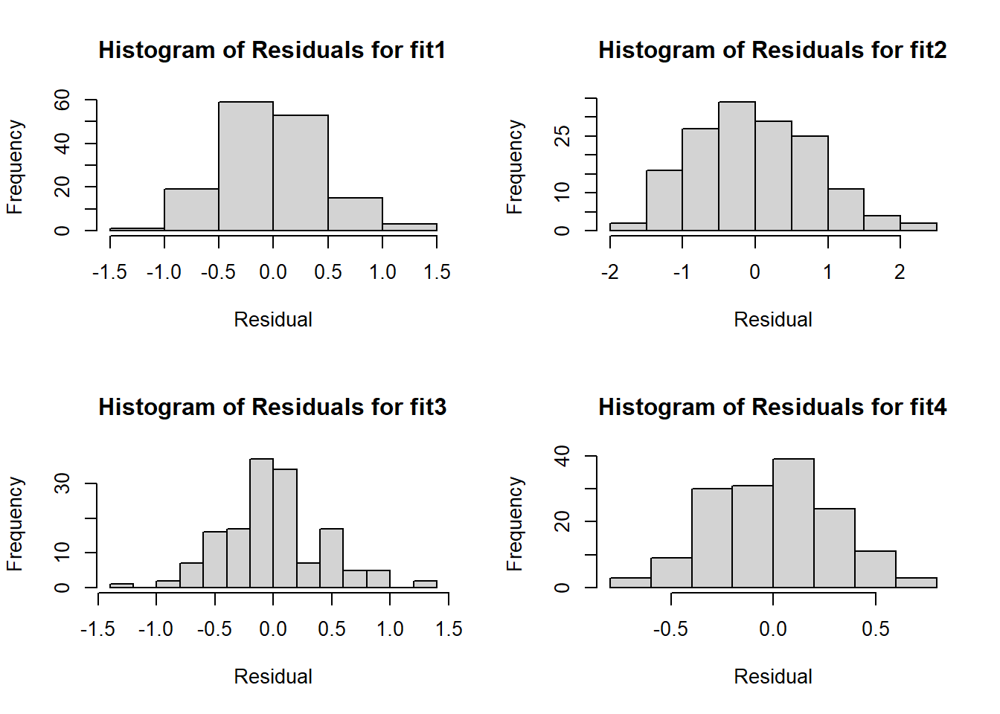

Before we get started, we need to read in the core tidyverse packages.
library(tidyverse)
Warning: package 'tidyverse' was built under R version 4.3.3
Warning: package 'tidyr' was built under R version 4.3.3
Warning: package 'purrr' was built under R version 4.3.3
Warning: package 'dplyr' was built under R version 4.3.3
Warning: package 'forcats' was built under R version 4.3.3
Warning: package 'lubridate' was built under R version 4.3.3
── Attaching core tidyverse packages ──────────────────────── tidyverse 2.0.0 ──
✔ dplyr 1.1.4 ✔ readr 2.1.5
✔ forcats 1.0.0 ✔ stringr 1.5.1
✔ ggplot2 3.4.4 ✔ tibble 3.2.1
✔ lubridate 1.9.3 ✔ tidyr 1.3.1
✔ purrr 1.0.2
── Conflicts ────────────────────────────────────────── tidyverse_conflicts() ──
✖ dplyr::filter() masks stats::filter()
✖ dplyr::lag() masks stats::lag()
ℹ Use the conflicted package (<http://conflicted.r-lib.org/>) to force all conflicts to become errors
Task 1: Conceptual Questions
What is the purpose of the lapply() function? What is the equivalent purrr function?
The purpose of lapply() is to easily apply a function to each element of a list. The equivalent purrr function is map().
Suppose we have a list called my_list. Each element of the list is a numeric data frame (all columns are numeric). We want use lapply() to run the code cor(numeric_matrix, method = "kendall") on each element of the list. Write code to do this below!
lapply(X=my_list,FUN=cor,method="kendall")
What are two advantages of using purrr functions instead of the BaseR apply family?
There are several associated helper functions and some convenient shorthand functionality.
There is more consistency across purrr functions in terms of argument naming schemes, etc.
What is a side-effect function?
A side-effect function is a function where the main purpose is not to modify objects in the environment, but rather to output other things like data files, text, and plots. Examples are plot() and write_csv.
Why can you name a variable sd in a function and not cause any issues with the sd function?
Because R creates temporary function environment while the function is running, preventing any action within the function environment from overwriting anything outside that environment. The exception is, of course, the object assigned the function output.
Task 2: Writing R Functions
Let’s build some functions to calculate standard measures of prediction accuracy!
1.
To start, we will create the function getRMSE() to calculate the root mean square error (RMSE), or the square root of the average squared difference between a model’s predictions and the actual values of the response variable.
#Writing a function to calculate root mean square error for model predictionsgetRMSE<-function(resp,pred,...) {#Checking validity of pred and resp inputsif (!is.atomic(pred) |!is.numeric(pred)) stop("pred must be a numeric vector")if (!is.atomic(resp) |!is.numeric(resp)) stop("resp must be a numeric vector") #Calculating the squared differences between predictions and true values squared_diffs<-(resp-pred)^2 RMSE<-sqrt(mean(squared_diffs,...))return(list("RMSE"=RMSE))}
2.
Now let’s test our function by running a regression on some similated data and passing the response values and predictions to getRMSE(). We will start by generating our data.
#Setting seed for reproducibilityset.seed(10)#Generating 100 simulated x and resp valuesn <-100x <-runif(n)resp <-3+10* x +rnorm(n)#Generating predictions from regressing resp on xpred <-predict(lm(resp ~ x), data.frame(x))
Now that we have our data, let’s apply our getRMSE() function.
#Generating RMSE for simulated datagetRMSE(resp=resp,pred=pred)
$RMSE
[1] 0.9581677
As a final check, we will see how our function handles missing values when we include na.rm=TRUE and when we do not.
#Converting the 12th and 48th response values to missingresp_nas<-respresp_nas[c(12,48)]<-NA_real_#Testing getRMSE function with na.rm=TRUEgetRMSE(resp=resp_nas,pred=pred,na.rm=TRUE)
$RMSE
[1] 0.9626301
#Testing function without na.rm=TRUEgetRMSE(resp=resp_nas,pred=pred)
$RMSE
[1] NA
Interesting! Note that our function overcomes the missing values and works as intended when we specify na.rm=TRUE; it calculates the RMSE for the observations where the response is not missing. However, when we don’t include this specification, our function returns NA.
3.
Now we will create the getMAE() function to calculate the mean absolute error (MAE), or the average absolute difference between response values and their predictions.
#Writing a function to calculate mean absolute error for model predictionsgetMAE<-function(resp,pred,...) {#Checking validity of pred and resp inputsif (!is.atomic(pred) |!is.numeric(pred)) stop("pred must be a numeric vector")if (!is.atomic(resp) |!is.numeric(resp)) stop("resp must be a numeric vector") #Calculating the absolute differences between predictions and true values abs_diffs<-abs(resp-pred) MAE<-mean(abs_diffs,...)return(list("MAE"=MAE))}
4.
Let’s use our simulated data to test the getMAE() function.
#Generating MAE for simulated datagetMAE(resp=resp,pred=pred)
$MAE
[1] 0.8155776
Let’s see what happens when our data include NAs. As we did for problem 2, we will see what happens when we do and do not specify na.rm=TRUE.
#Testing getMAE function with na.rm=TRUEgetMAE(resp=resp_nas,pred=pred,na.rm=TRUE)
$MAE
[1] 0.8180911
#Testing function without na.rm=TRUEgetMAE(resp=resp_nas,pred=pred)
$MAE
[1] NA
As was the case for getRMSE(), when we include na.rm=TRUE, the function works as intended and calculates the MAE for the observations where the response is not missing. Meanwhile, when we do not include this additional specification, our function cannot overcome the missing values and returns NA.
5.
Let’s build a wrapper function that calls either or both of our functions above. We will call this function get_pred_stat. By default, the function will return both the RMSE and MAE.
Note to grader: I include data validity checks in the individual getRMSE and getMAE functions, so it is not necessary to add those checks into the explicit code for the wrapper function.
#Creating a wrapper function for getRMSE and getMAEget_pred_stats<-function(resp,pred,stats=c("RMSE","MAE"),...) {#Initially creating a list to return return_list<-list()#Running getRMSE if RMSE is requestedif ("RMSE"%in% stats) { return_list$RMSE<-unlist(getRMSE(resp=resp,pred=pred,...)) }#Running getMAE if MAE is requestedif ("MAE"%in% stats) { return_list$MAE<-unlist(getMAE(resp=resp,pred=pred,...)) }#Returning requested model prediction statsreturn(return_list)}
6.
To test this function, let’s first request the RMSE for our response and prediction values created in problem 2.
#Requesting RMSE using get_pred_statsget_pred_stats(resp=resp,pred=pred,stats="RMSE")
$RMSE
RMSE
0.9581677
Great, the results are the same as in problem 2!
Next, let’s request the MAE for the same response and prediction values.
#Requesting MAE using get_pred_statsget_pred_stats(resp=resp,pred=pred,stats="MAE")
$MAE
MAE
0.8155776
We got exactly what we wanted, as the results were the same as in problem 4.
Let’s confirm that when we don’t specify a stat, we receive both RMSE and MAE.
#Testing function using default stats (both RMSE and MAE)get_pred_stats(resp=resp,pred=pred)
$RMSE
RMSE
0.9581677
$MAE
MAE
0.8155776
Excellent, the function does indeed return both statistics.
Now, let’s see what happens when we use the modified response vector that includes two Nas. As we did above, we will separately run the function with and without na.rm=TRUE specified.
#Testing NA handling when na.rm=TRUE specifiedget_pred_stats(resp=resp_nas,pred=pred,na.rm=TRUE)
$RMSE
RMSE
0.9626301
$MAE
MAE
0.8180911
#Testing NA handling when na.rm=TRUE not specifiedget_pred_stats(resp=resp_nas,pred=pred)
$RMSE
RMSE
NA
$MAE
MAE
NA
As was the case for our individual getRMSE and getMAE functions when we specify na.rm=TRUE, the function excludes the observations with missing values and calculates the RMSE and MAE. When we do not specify na.rm=TRUE, NAs are returned, which matches the behavior of the individual functions.
As a final set of checks, we will test the function when incorrect data are specified. First, let’s feed a character vector for pred.
#Testing the function with a character vector passed for predget_pred_stats(resp=resp,pred=as.character(pred))
Error in getRMSE(resp = resp, pred = pred, ...): pred must be a numeric vector
This is exactly what we wanted to happen; the function returns an error and informs us that pred must be a numeric vector.
Now, let’s feed a data frame for resp and see what the function returns.
#Testing the function with a data frame passed for respget_pred_stats(resp=data.frame(resp,resp),pred=pred)
Error in getRMSE(resp = resp, pred = pred, ...): resp must be a numeric vector
Again, the function performed as we wanted it to, indicating that resp must also be a numeric vector.
Task 3: Practice with purrr
For the third task, let’s explore some purrr functions.
1.
To begin, we will compare the following methods for extracting coefficients from a regression output:
The $ operator
coef()
pluck() from purrr
#Capturing an example regression fitlm_fit1 <-lm(Sepal.Length ~ Sepal.Width + Species, data = iris)#Using $ to extract coefficientslm_fit1$coefficients
The results are identical; each method returns the same named vector of coefficients.
2.
Let’s extend the use of pluck() across multiple regression fits to really see what purrr can do. To do this, we will fit three additional models and combine the four regression outputs in a single list.
#Fitting three additional example modelslm_fit2 <-lm(Sepal.Length ~ Sepal.Width, data = iris)lm_fit3 <-lm(Sepal.Length ~ Petal.Width + Sepal.Width + Species, data = iris)lm_fit4 <-lm(Sepal.Length ~ Petal.Width + Petal.Length + Sepal.Width + Species,data = iris)#Combining regression outputs in a single listfits <-list(lm_fit1, lm_fit2, lm_fit3, lm_fit4)#Extracting the coefficients for each model fitfits |>map(pluck,coefficients)
Again, that was incredibly easy, and now we can identify the coefficients in each model that are statistically different from 0.
4.
Let’s plot the residuals for each fit to visualize in-sample prediction error. To start, we will utilize the map function to capture the residuals for each fit and the walk function to generate a histogram for each fit.
#Specifying a 2x2 grid of histogramspar(mfrow =c(2, 2))#Extracting residuals and creating histogramsfits |>map(resid) |>walk(hist,xlab="Residual")

That wasn’t too hard, but the titles are not informative.
5.
Let’s give names to the elements of the residuals list to see if that fixes the issue.
#Specifying a 2x2 grid of histogramspar(mfrow =c(2, 2))#Extracting residuals, naming list elements, and creating histogramsfits |>map(resid) |>set_names(c("fit1","fit2","fit3","fit4")) |>walk(hist,xlab="Residual")
No luck, as there is no clear way to pass the names to the hist function.
It seems we need to use the walk variant iwalk to gain access to the element names. Let’s combine iwalk with an anonymous function that indicates we want to run the hist function for each set of residuals and specify a title that incorporates the element names.
#Specifying a 2x2 grid of histogramspar(mfrow =c(2, 2))#Extracting residuals, naming list elements, and creating histograms with names incorporated in titlesfits |>map(resid) |>set_names(c("fit1","fit2","fit3","fit4")) |>iwalk(\(x,idx) hist(x,main=paste0("Histogram of Residuals for ",idx),xlab="Residual"))

It worked! Now we know which histogram corresponds to which fit. The distribution of residuals is generally symmetric, which is what we want to see. There is visual evidence of a slight right-skew for the second model, although that is not the case when we add regressors to the model (fit2 only includes Sepal.Width as a regressor). Additionally, this slight asymmetry could be the product of the current bin width and positions rather than actual asymmetry.